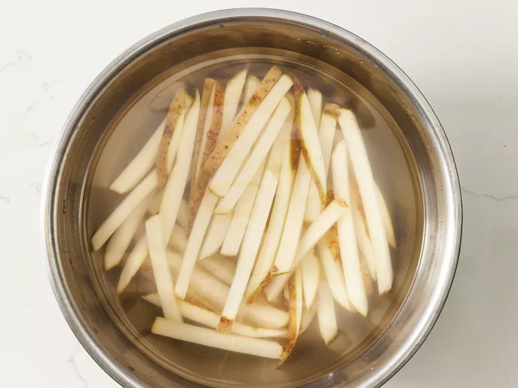
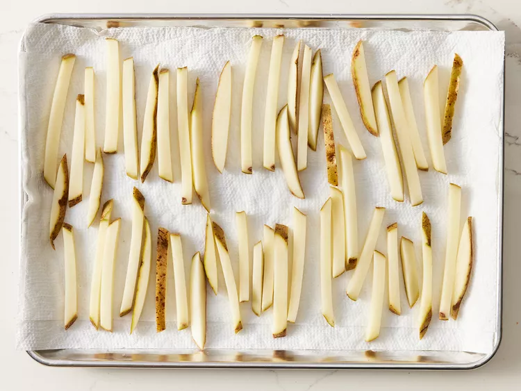
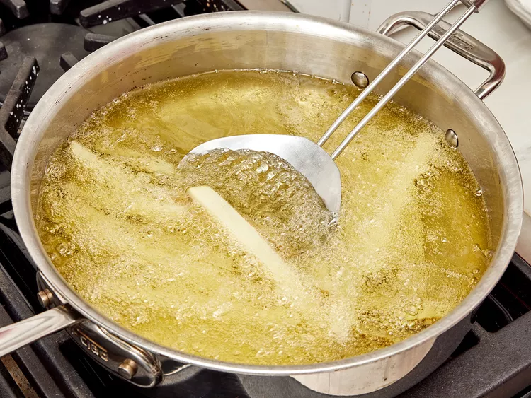
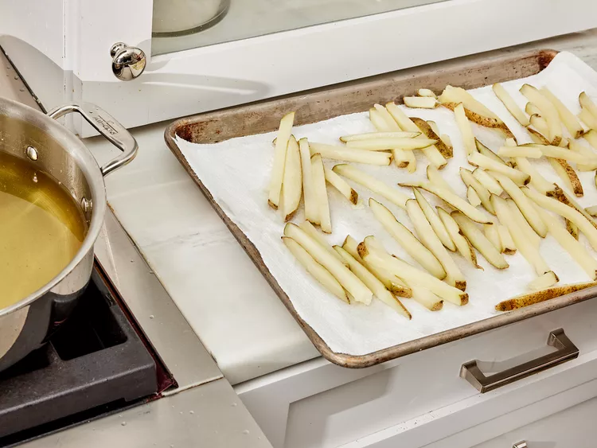
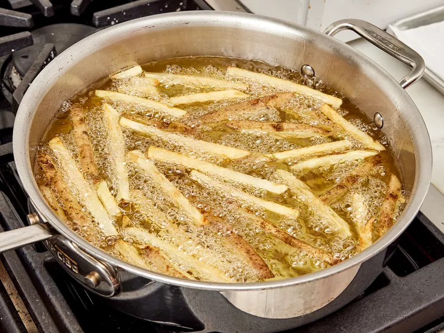
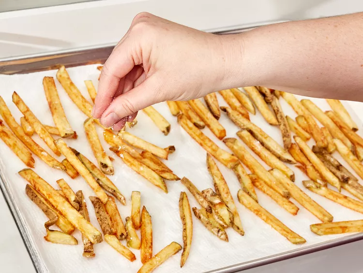

French Fries

Descriptions
Learn how to make French fries that are super crispy with whis twice-fried method.
The first frying is done at a lower temperature, which softens the potato and prepares the
starchy surface for the second frying's crispification.
Ingredients
- 1 large russet potato, cut into evenly sized strips
- vegetable oil for frying, about 2 cups or as needed
- salt to taste
Directions
-
Soak potato strips in a large bowl of water for about 30 minutes.

-
Pat with paper towels until thoroughly dry.

-
Heat oil in a deep-fryer or large saucepan to 275 degrees F (135 degres C).
Gently add potatoes to the hot oil and fry for about 5 minutes.stirring and
flipping the potatoes ocassionally.

-
Use slotted spoon to transfer potatoes to apaper towel-linwd plate.
Let cool completely.

-
Heat oil again, but this time to 350 degrees F (175 degrees C).
Add potatoes and fry a second tim until golden brown,5 to 6 minutes.

-
Remove from the deep-fryer and blot with paper towel.
Sprinkle with salt to serve.

-
Enjoy.